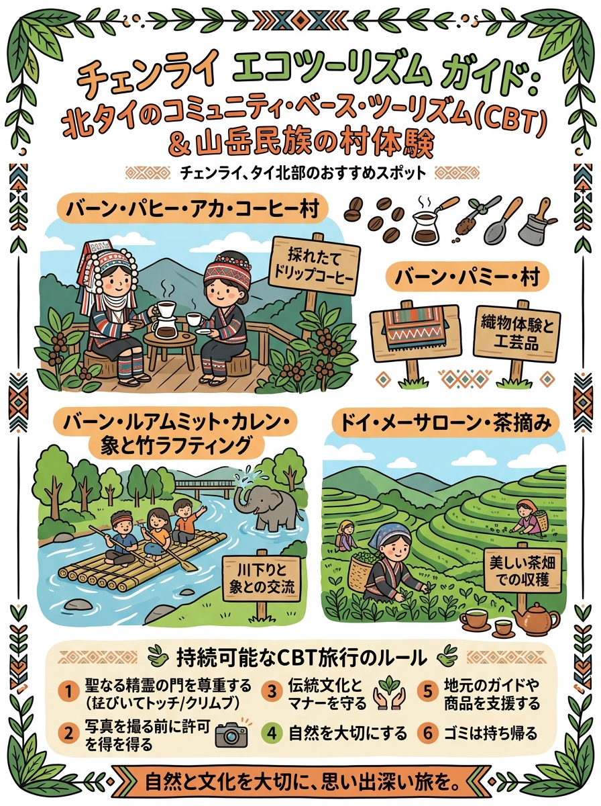
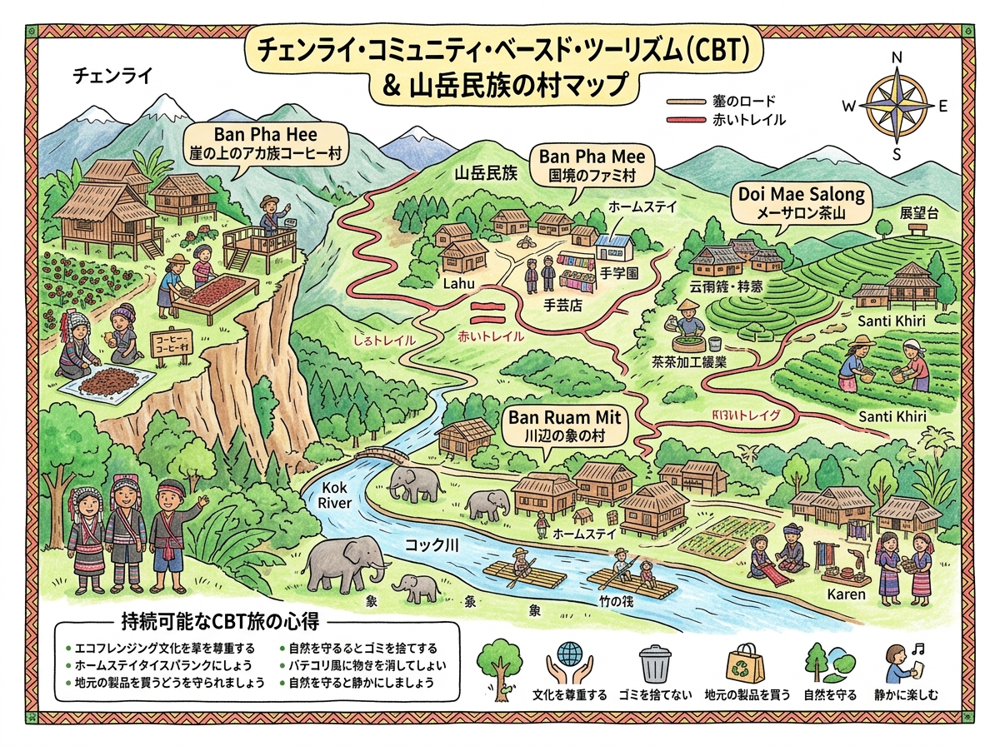

01
VISUAL GUIDE
インフォグラフィック・イラストガイド
クリックすると拡大して詳細を確認・印刷できます。

🔍 タップで拡大
A4 縦型
北タイ山岳地帯のコミュニティベースド・ツーリズム（CBT）体験スポット（情報凝縮ポスター）
旅行者の持ち歩き・印刷に適した手書き風インフォグラフィック。

🔍 タップで拡大
A4 横型
周遊マップ ＆ 見開きガイド
位置関係やルート、全体像を俯瞰できるワイドデザイン。
DETAILED GUIDE & DATA
詳細ガイド ＆ データ一覧（全7件）
現地調査および公的データに基づく最新詳細情報。
02
バーン・ローチャ（Ban Lorcha / บ้านหล่อชา / アカ族生きた博物館）
03
バーン・メーカンポン（Ban Mae Kampong / บ้านแม่กำปอง）
04
バーン・ジャーボー（Ban Jabo / บ้านจ่าโบ่ / 黒ラフ族集落）
05
バーン・フワイヒー（Ban Huai Hee / บ้านห้วยฮี้ / カレン族集落）
06
バーン・ノンブア／タイ・ルー集落（Ban Nong Bua - Tai Lue / บ้านหนองบัว）
07